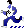

Exporters
Exporters Extensions
Extensions Interface
Interface Chowdren
Chowdren ClickStore
ClickStore Bug Tracker
Bug Tracker| |
This is an archive. |
| See the new ClickWiki at https://clickwiki.github.io. This version is just an archive for the purposes of migrating content to the new structure. |
Active
|  | |
| Author | |
| Status | Released |
| Release Date | Unknown |
| Available for | |
| Supported Runtimes | |
| License | Free |
| Download | |
|---|---|
| Includes Examples | No |
| Includes Help Files | Yes |
| Links | |
{kind=link}
Active objects are very useful. They provide control over the movement, animation, position, direction, and visibility of the moving objects and characters used in your Clickteam Fusion 2.5 applications. Active objects are great if you need an object that moves and interacts with the other objects in your games, screen-savers, and other applications you create. For example, Active objects let your sprites bounce across the screen, launch other objects, and swap positions with other objects in the frame. Other features of the Active object include the detection of collisions between objects, the selection of a sprite at random, and the ability to test for the number of objects in a specific zone of the frame. In addition, Active objects are ideally suited to other tasks such as making animated buttons, storing variable information in their alterable values or in the state of their flags.
Contents
- 1 Properties
- 2 Conditions
- 2.1 Collisions
- 2.2 Movement
- 2.3 Position
- 2.4 Direction
- 2.5 Animation
- 2.6 Pick or count
- 2.7 Visibility
- 2.8 Alterable values
- 3 Actions
- 3.1 Movement
- 3.2 Position
- 3.3 Direction
- 3.4 Animation
- 3.5 Visibility
- 3.6 Effect
- 3.7 Order
- 3.8 Launch an object
- 3.9 Alterable values
- 3.10 Alterable strings
- 3.11 Flags
- 3.12 Scale/Angle
- 3.13 Debugger
- 3.14 Destroy
- 4 Expressions
- 4.1 Movement
- 4.2 Animation
- 4.3 Effect
- 4.4 Position
- 4.4.1 X coordinate
- 4.4.2 Y coordinate
- 4.4.3 Width
- 4.4.4 Height
- 4.4.5 X coordinate of left edge
- 4.4.6 X coordinate or right edge
- 4.4.7 Y coordinate of top edge
- 4.4.8 Y coordinate of bottom edge
- 4.4.9 X coordinate of action point
- 4.4.10 Y coordinate of action point
- 4.4.11 Get layer
- 4.4.12 Distance with a point
- 4.4.13 Angle of a vector
- 4.5 Values
- 4.6 Get RGB at...
- 4.7 Count
- 4.8 Index of for each loop=
- 4.9 Name
- 4.10 Retrieve fixed value
Properties
See Object Properties.
Conditions
The conditions menu of the active object contain all the default conditions that you can find in other objects with a movement, a sprite or an alterable value property. Therefore you will find these menus for multiple different objects.
Collisions
Another object
This condition is true when the object collides with another object. The collision detection is pixel precise for the objects that have the "Use Fine Detection" property selected. For other objects, it is done with the rectangle surrounding the object. Note that this condition is only true once at the beginning of the collision, for continuous detection use the next condition.
Overlapping another object
Detects a collision with another object continuously. As above, the collision detection is pixel precise for the objects that have the "Use Fine Detection" property selected. For other objects, it is done with the rectangle surrounding the object.
Backdrop
This condition is true when the object collides with a backdrop object marked as "obstacle". This is a one shot condition: it is only true once at the beginning of the collision, for continuous detection use the following condition.
Overlapping a backdrop
This condition is continuously true when the object collides with a backdrop object marked "obstacle".
Movement
Is "Object" stopped?
This condition is true when the object does not move (its speed is zero).
Is "Object" bouncing?
True at the very moment when the object is bouncing. Only valid for movements where the object can bounce. Compare speed of "Object" to a value==== As it name implies, allows you to compare the speed to a reference speed. True if the comparison is correct.
Compare the acceleration of "Object" to a value
Use this condition to compare the acceleration value (0-100) of the object to a given value. Only valid for movements with an acceleration.
Compare the deceleration of "Object" to a value
Use this condition to compare the deceleration value (0-100) to a given value. Only valid for movements with a deceleration.
Path movement
The following conditions are valid only for objects with a path movement.
Has "Object" reached a node in the path
This condition is true each time the object reaches a node in the path.
Has "Object" reached the end of the path
The condition is true when the object reaches the end of the path.
Has "Object" reached a named node in the path.
Since Clickteam Fusion 2.5, the node of a path movement can have a name. This condition is true when the name of the reached node is equal to the given name.
Position
Test position of "Object"
Use this condition to test the position of the object on the screen, relative to the borders of the frame. You can test the object entering of leaving the frame, or being within or outside of the frame. For example, in a bouncing ball movement, this condition is used to detect the ball leaving the frame to make it bounce.
Is "Object" getting close to window's edge
This condition asks for two parameters, a distance in X and a distance in Y. It will be true when the object is closer to "distance X" from the vertical border, and closer to "distance Y" from the horizontal border of the frame.
Compare X Position to a value
As the name indicates, this condition compares the X coordinate of the object to a given value. The condition is true when the comparison is satisfied.
Compare Y Position to a value
Same as before, for the Y coordinate.
Direction
Compare to direction of "Object"
Compare the direction of the object to a given direction. Opens a direction selector for you to enter the direction to compare to. If you select more than one direction, the condition will be true if the direction is any of the selected directions. You can also enter an expression for the comparison.
Animation
Which animation of "Object" is playing?
This condition is true when the animation of the object is equal to the given condition. You can if you want to use an expression for the comparison, in this case, a number represents the animation.
- 0: Stopped
- 1: Walking
- 2: Running
- 3: Appear
- 4: Disappear
- 5: Bounce
- 6: Launch
- 7: Jump
- 8: Fall
- 9: Climb
- 10: Crouch
- 11: Uncrouch
- 12 and over: User animations
Has an animation finished
This condition is true if the given animation is complete. Warning, a looping animation will never finish!
Compare current frame of animation to a value
Allows you to detect if the animation is currently displaying a specific frame. Asks for a frame number. Warning frame numbers begin at zero (zero is the first frame of the animation).
Pick or count
Pick "Object" at random
This condition is always true if at least one "Object" exists in the frame. It will randomly select one of the given objects: the actions will only affect this object.
Have all "Object" been destroyed
This condition is only true when the last "Object" has been destroyed. It is only true for one loop.
Compare to the number of "Object" objects
As the name indicate, allows you to perform a comparison on the number of "Objects" present on the frame. If the comparison is true, the condition is true.
Test for no "Object" objects in a zone
Asks for you to define a zone on the frame. This condition is true when NO "Object" are located in the defined zone.
Compare to the number of "Object" objects in a zone
Asks for you to define a zone in the frame and a value for the comparison. This condition is true when the number of "Objects" in the given zone is equal to the given number.
Visibility
Is "Object" visible
This condition is true if the object is visible in the frame.
Is "Object" invisible
This condition is true when the object is hidden.
Alterable values
Compare to one of the alterable values
Allows you to perform a comparison on one of the internal alterable values of the object. The condition is true if the comparison is true.
Compare to fixed value
The fixed value is a unique number for the object. This number is unique to the entire frame and specific for the instance of the given object. This condition compares a value to the fixed value, and is true if the comparison is true.
Flags
Is flag on?
True if the given internal flag is true.
Is flag off?
True if the given internal flag is false.
Actions
The actions of the active object are the standard actions for objects with a movement, or alterable values. They are present in many other objects.
Movement
Stop
Stops the current movement.
Start
Restarts the current movement if it has been stopped before.
Set speed...
Changes the current speed of the movement. Only valid for movements with speed.
Set maximum speed
Changes the maximum speed of the object if applicable (if the object's movement has a maximum speed). Asks for a value between 0 and 100.
Set acceleration
Changes the acceleration value of the movement of the object. Asks for a value between 0 and 100.
Set deceleration
Changes the deceleration value of the movement of the object. Asks for a value between 0 and 100.
Set rotating speed
Changes the rotating speed of the object, only for certain movements like the race car movement. Asks for a value between 0 and 100.
Set authorized directions
Changes the authorized directions for the movement. Only available for certain movements like the ball movement.
Wrap around play area
Makes the object wrap from one side to the other. Available for movements like the ball movement, the race car movement.
Bounce
Makes the object bounce.
Reverse
Reverses the movement. Ie goes backward. Do not confuse this action with the bounce action.
Path movement
Goto node
Only available for path movement. Makes the movement go in the direction of the given node, and stop when it reaches it. Asks for the name of the node to go to.
Branch node
Branches immediately the given node at the current position of the object. The movement will carry on from the node in the movement.
Multiple movements
Next movement
If you have defined multiple movements for this object, this action will make the object select the next movement in the list.
Previous movement
Like the previous action, this action is only available for multiple movement objects. This action will select the previous movement in the list.
Select movement
Immediately selects a movement from the list.
Position
Select position
Allows you to position the object on the screen with a dialog box. In runtime, this action will change the position of the object.
Swap position with another object
Exchange the position of two objects: the first one will be at the position of the second one and vice-versa.
Set X Coordinate
Changes the horizontal coordinate of the object.
Set Y Coordinate
Changes the vertical coordinate of the object.
Direction
Select direction
Changes the direction of the movement of the object. If you enter more than one direction in the direction selector, it will randomly choose one direction at random from the selected ones. Please note that this might not change the direction of the animation if the selected direction is not defined in the animation.
Look in direction of
Asks for you to enter a position on the frame, relative or not from another object. Upon runtime, this action will make the object rotate to face the selected coordinate.
Animation
Stop
Stops the animation of the object.
Start
Restarts a stopped animation
Change
Animation sequence
Selects another animation. This choice will remain until a new Change animation sequence or a Restore animation sequence.
Direction of animation
Selects another direction for the animation. This choice will remain until a new Change direction of animation or a Restore animation direction.
Speed of animation
Changes the speed of the animation, from 0 to 100. This choice will remain until a new Change speed of animation or a Restore animation speed.
Animation frame
Changes the frame of the animation, overriding the entire animation process. This will remain until a new Change animation frame or a Restore animation frame.
Restore
Animation sequence
Restores the animation to normal.
Direction of animation
Restores the direction of the animation to normal.
Speed of animation
Restores the speed of the animation to normal.
Animation frame
Restores the animation frame to normal.
Paste Image into Background
Pastes the current image of the object into the background, using the current ink effect. You can also select the way the pasted object will affect the collisions with the background:
No effect on collisions
The pasted object does not change the collision map at all.
Not an obstacle
The zone under the object will not generate any collisions.
Obstacle
The zone under the object will generate an "Obstacle" collision.
Platform
The zone under the object will be a platform.
Ladder
The zone under the object will be a ladder.
Note: in the first layer, the objects pasted by this function only exist in the part of the screen that is visible at the time it's pasted. If the object goes out of the screen, for example in a scrolling application, it will be definitely destroyed. To make your pasted object permanent in the first layer, use the next function. If the object is not in the first layer, then the pasted object will be permanent and won't disappear.
Add Backdrop
Adds the current image of the object as a new backdrop object, using the current ink effect. The new object is permanent, even in the first layer. You can also select the way the pasted object will affect the collisions with the background, refer to the function above for more info.
Replace Color
Allows you to replace a color by another one in the current image of the object. Select the color to replace in the color selector, or via the Calculation button, and then the new color. The Calculation button in the Color selector allows you to enter an RGB value. An RGB value can be calculated from its Red, Green, and Blue components by the following formula: RGB_Value = B*65536 + G*256 + R. To extract the R, G, and B components from an RGB value, use: R = RGB_Value AND 255 G = (RGB_Value / 256) AND 255 B = (RGB_Value / 65536) AND 255
Load Frame
This function allows you to replace an existing frame of a given animation & direction by a graphic file from the disk. Parameters:
- Filename: pathname of the graphic file to load.
- Animation: animation that contains the frame to modify.
- Direction: direction that contains the frame to modify.
- Frame index: index of the frame to modify (0 = first frame).
- X, Y coordinates of hotspot: coordinates of the hot spot. Special values: use 100000 if you want the hot spot to be centered in the image, or 110000 if you want it to be aligned on the right (or bottom) border of the image.
- X, Y coordinates of action point: coordinates of the action point. Same special values as above.
Transparent color: the RGB value of the transparent color. Use -1 to get the transparent color from the first pixel of the image.
Visibility
Make object invisible
Hides the object.
Make object reappear
Redisplays an invisible object.
Flash object
Asks for a flashing period. Makes the object flash on the screen.
Change effect
Changes the way the object is displayed on the screen, by changing the operator used when transferring the data on the screen. Note: if your project is using a Direct3D Display Mode, this action is in the Effect/Compatibility menu below. The choices are:
None
The object is displayed normally.
Semi-transparent
The object is melted with the background using a transparency ratio, from 0 (transparent) to 128 (opaque)
Inverted
Performs a logical inversion of the object's bytes.
XOR
Performs a logical XOR between the background bytes and the object's bytes.
AND
Performs a logical AND between the background bytes and the object's bytes.
OR
Performs a logical OR between the background bytes and the object's bytes.
Add
Performs an addition between the background colors and the object's colors.
Subtract
Performs a subtraction between the background colors and the object's colors.
Monochrome
Converts the object's colors to shades of gray.
Set semi-transparency
If the object's ink effect is Semi-transparent, this action allows you to change the semi-transparency ratio, from 0 to 128. Note: if your version contains HWA features, this action is in the Effect / Compatibility menu below.
Effect
Note: this menu only exists if your app uses a Direct3D Display Mode.
Set effect
Changes the display effect of the object.
Set effect parameter
Changes the value of a parameter of the current effect. Parameters = parameter name and parameter value. Each effect can have different parameters. The name of the parameters to specify in this action is the name of the variable to change in the pixel shader. This name is mentioned between parentheses after the full parameter name in the properties of the object. The value depends on the type of parameter, it is usually explained in the description window in the Effects list when you select the effect, or in the property window.
Set effect image parameter
Some effects take images as parameters. This action allows you to load graphic files into image parameters.
Set alpha-blending coefficient
Allows you to change the Blend coefficient at runtime, value = 0 (no semi-transparency) to 255 (fully transparent).
Set RGB Coefficient
Allows you to change the RGB coefficient. Parameter = new RGB value, in the following format : B*65536 + G*256 + R (you can also use the GetRGB function of the Special object to build a RGB value from R,G,B components).
This menu contains the old Change effect and Set semi-transparency actions of the Visibility menu.
Order
Bring to front
Moves the object in front of the other objects in the same layer. Note: active objects cannot go before Windows control objects. Also, objects with the "Display as background" option cannot go in front of active objects.
Bring to back
Moves the object behind the other objects in the same layer. Note: active objects cannot go before background objects or objects with the "Display as background" option.
Move behind object
Moves the object behind another one in the same layer, if possible.
Move in front of object
Moves the object in front of another one in the same layer, if possible.
Move to layer
Changes the layer of the object. The object is added to the front of the other layer.
Launch an object
Allows you to launch an object. You have first to select which object to launch, and then its speed (from 0 to 100). The object is created at the position of the action point.
Alterable values
Set
Allows you to change the value of an alterable value.
Add to
Adds a value to an alterable value.
Subtract from
Subtracts a value from an alterable value.
Spread value
This action is quite powerful and allows you to spread numbers in an alterable value of multiple instances of an object. Imagine you have 10 instances of an object called "Ball". If you spread a value in Alterable Value A of the Ball object, starting at 1, the first object will have the value 1, the second the value 2, the third 3 etc. up to 10.
Alterable strings
Set
Allows you to change the text of an alterable string.
Flags
Set on
Changes the value of one of the internal flags of the object (flags 0 to 31). Sets the value to TRUE (set).
Set off
Changes the value of one of the internal flags of the object. Sets the value to FALSE (off).
Toggle
Changes the value of one of the internal flags of the object. Toggle the value (set to FALSE if it were TRUE and vice-versa).
Scale/Angle
Set Scale
Changes the scale of the object on both axes. Enter a floating point value: 1.0 is the normal size, 0.5 will divide the size by 2, 2.0 will double the size, etc. You can also choose the resize algorithm, fast (0) or with a better quality but slower (1).
Set X Scale
Changes the scale of the object on the X-axis (horizontally). Enter a floating point value: 1.0 is the normal size, 0.5 will divide the size by 2, 2.0 will double the size, etc.
Set Y Scale
Changes the scale of the object on the Y axis (vertically). Enter a floating point value: 1.0 is the normal size, 0.5 will divide the size by 2, 2.0 will double the size, etc.
Set Angle
Allows you to rotate the object. Enter an angle between 0 and 359 degrees. You can also choose the rotating algorithm, fast (0) or with a better quality but slower (1).
Debugger
Add object to debugger
Allows you to add the object to the list of objects displayed in the Debugger window.
Destroy
Destroys the object.
Expressions
The Active object's expressions are the standard expressions for sprites, movements and alterable values. You will find this list of expressions in many other objects.
Movement
Speed
Speed( "Active" )
Returns the speed of the object, a value from 0 (stopped) to 100 (full speed).
Acceleration
Acc( "Active" )
Returns the acceleration value of the object, a value from 0 (no acceleration) to 100 (immediate acceleration).
Deceleration
Dec( "Active" )
Returns the deceleration value of the object, a value from 0 to 100.
Gravity
Gravity( "Active" )
Note: Only available for Physics movements. No info available, please add some!
Get current movement number
NMovement( "Active" )
If the object has more than one movement defined, returns the current movement number. The first movement is number 0.
Animation
Current direction value
Dir( "Active" ) Returns the current direction of the object, a value from 0 to 31.
Current frame
Image( "Active" )
Returns the number of the currently displayed frame of animation. The first frame is number 0.
Current animation value
Anim Number( "Active" )
Returns the number of the animation being displayed. A number representing the animation.
- 0: Stopped
- 1: Walking
- 2: Running
- 3: Appear
- 4: Disappear
- 5: Bounce
- 6: Launch
- 7: Jump
- 8: Fall
- 9: Climb
- 10: Crouch
- 11: Uncrouch
- 12 and over: user animations
Effect
Note: this menu does not exist if you are using the standard display mode.
Alpha-blending Coefficient
AlphaCoef( "Active" )
Returns the current Blend coefficient. Return value = 0 (no semi-transparency) to 255 (fully transparent). Note: in non-Direct3D display mode, due to internal conversion to a 0-128 value the value returned by this function may be slightly different from the one returned by the "Set alpha-blending Coefficient" action.
RGB Coefficient
RGBCoef( "Active" )
Returns the current RGB coefficient, in the following format: B*65536 + G*256 + R. You can use the GetRed, GetGreen and GetBlue functions of the Special object to extract each component value from the RGB value.
Effect Parameter
EffectParam( "Active", > Enter string here < )
Returns the value of a parameter of the current effect. Parameter = parameter name. See the Set Effect Parameter action for more info about parameters.
Compatibility
Get semi transparency ratio
SemiTrans( "Active" )
Returns the semi-transparency ratio if the ink effect is set to semi-transparency. A value from 0 to 128.
Position
X coordinate
X( "Active" )
Returns the horizontal coordinate of the object.
Y coordinate
Y( "Active" )
Returns the vertical coordinate of the object.
Width
OWidth( "Active" )
Width of the object.
Height
OHeight( "Active" )
Hieght of the object.
X coordinate of left edge
X Left( "Active" )
Returns the horizontal coordinate of the left edge of the object (which can be different from the X coordinate of the object, due to the position of the hot spot).
X coordinate or right edge
X Right( "Active" )
Returns the horizontal coordinate of the right edge of the object.
Y coordinate of top edge
Y Top( "Active" )
Returns the vertical coordinate of the top edge of the object.
Y coordinate of bottom edge
Y Bottom( "Active" )
Returns the vertical coordinate of the bottom edge of the object.
X coordinate of action point
XActionPoint( "Active" )
Returns the horizontal coordinate of the action point.
Y coordinate of action point
YActionPoint( "Active" )
Returns the vertical coordinate of the action point.
Get layer
Layer( "Active" )
Returns the index of the layer of the object, starting at 1.
Distance with a point
ODistance( "Active", >X of point<, >Y of point< )]
No info available, please add some!
Angle of a vector
OAngle( "Active", >X of point<, >Y of point< )
No info available, please add some!
Values
Values A to M
Allows you to retrieve one of the alterable values, from A to M.
Value N to Z
Allows you to retrieve one of the alterable values, from N to Z.
Alterable strings A to J
Allows you to retrieve one of the 10 alterable strings, from A to J.
Alterable value by index
AltValN( "Active", > Enter value here < )
Allows you to retrieve one of the alterable values from its index (0-based). Alterable string by index====
AltStrN$( "Active", > Enter value here < )
====Allows you to retrieve one of the alterable strings from its index (0-based).
Value of one of the internal flags
Flag( "Active", > Enter value here < )
Retrieves the value of one of the internal flags (flags 0 to 31). If the flag is FALSE, the value is 0, if it is TRUE the value is 1.
Get RGB at...
RGBAt( "Active", >Enter X coordinate<, >Enter Y coordinate< )
Allows you to retrieve the color of a point in the current image of the object. You have to enter the X and Y coordinates of the point you wish to test, and the function will return a number containing the RGB value of the point. A RGB value can be calculated from its Red, Green, and Blue components by the following formula: RGB_Value = B*65536 + G*256 + R. To extract the R, B and B components from a RGB value, use: R = RGB_Value AND 255 G = (RGB_Value / 256) AND 255 B = (RGB_Value / 65536) AND 255
Count
Index of for each loop=
ForEachLoopIndex( "Active" )
No info available, please add some!
Number of objects
NObjects( "Active" )
Returns the number of given object created at the moment.
Name
OName$( "Active" )
Retrieves name of object, "Active" in the code examples on this page.
Retrieve fixed value
Fixed( "Active" )
Retrieves the fixed value of the object. The fixed value is a unique number for this instance of the object. No other object exists with this value in the application. Use the "Compare to fixed value" condition to find an object from its value.